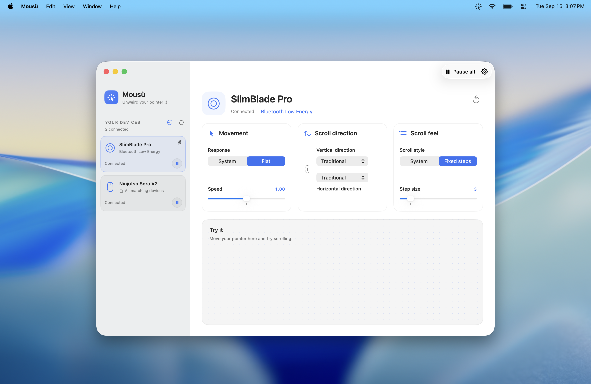

Mousü
Pointer control.
Per device.
Set speed, acceleration, and scrolling for each mouse, trackball, or trackpad.
Download0.9.1 beta macOS 26+ Apple Silicon


Mousü for macOS
Download0.9.1 beta macOS 26+ Apple Silicon